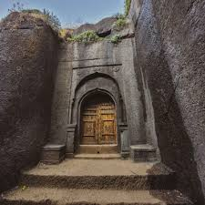
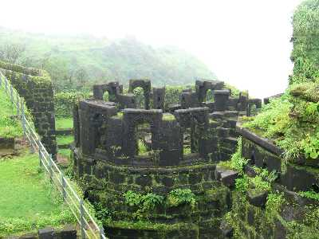

No, permission is not needed for the trek.

The Harishchandragad :
Basic Info About Location Harishchandragad:
Harishchandragad is located in Maharashtra. district of Ahmednagar. Surrounded by the beautiful scenery of the Western Ghats, this fort is roughly 1,424 meters above sea level.
In the surrounding region, nature lovers and adventurers can enjoy lush greenery, rolling hills, and flowing waterfalls. The fort's strategic location atop a steep hill provides scenic views of the scenic Sahyadri mountain range and the huge Konkan region.
Entry to Harishchandragad is primarily via the base village of Pachnai, from where trekkers embark on the Kokankada Trek. For a unique experience in nature, trekkers travel through twirling trails, dense forests, and rocky terrain on their way to the fort.
Harishchandragad Visitors can explore its ancient temples, caves, and fortifications, each telling a story of ancient eras. From the towering cliffs of Kokankada to the sacred Harishchandreshwar Temple, the fort is a gem of historical and architectural wonders. It's always considered as one of the Instagrammable treks in India.
What Is the Best Time to Visit Ratangad Fort? You can visit anytime throughout the year, but considering the weather, October to March is the best time to go. However, the area has outstanding beauty during the monsoon season (June to September).
Locations to Visit in Ratangad Fort:
- Ganesh Darwaza: This temple is known as the main entrance of the fort.
- Kalyan Darwaza: Offering a glimpse into the region's rich past. Its imposing presence and intricate architecture evoke tales of valor and conquest.
- Nedhe (natural hole): Nedhe, or a naturally created hole in a rock, is one of nature's wonders. These holes are the result of wind-induced rock deterioration over millions of years. The size of these holes differs by area.
- The historic waterholes and caves.
Ratangad Fort Backpack:Things to Pack for Your Bag When Visiting Ratangad Fort:
- 2-3 Litres of water.
- Luggage packed in a good rucksack, all luggage wrapped properly.
- Rain Poncho (Rainy Season) / Hoodies / Jacket / Winchester for winter and summer season.
- Wear comfortable clothes during trek; avoid half sleeves shirts & lowers. Keep an extra pair of clothes.
- Sun cap and sunscreen.
- Dry snacks / Protein Bar / Electral – energizer drink.
- Personal first aid and personal medicine if any.
- Torch with extra batteries.
- Trekking shoes with a good grip & socks.
- Toiletries (Napkin, Facewash, Tissue, Toilet paper, Sanitizer).
- Trekking Pole.
Nearby Places to Visit Ratangad:
Bhandardara Lake:
Bhandardara Lake, periodically known as Arthur Lake, is a man-made lake built on the Pravara River by the Wilson Dam. This scenic location is perfect for boating, having a picnic, or just taking in the view. Ratangad Fort is about 12 kilometers from the lake.
Wilson Dam:
One of Maharashtra's oldest dams, it was built in the early 1900s. From the dam, you may take in the surrounding area's natural beauty and discover its historical significance. The dam is roughly 12 kilometers from Ratangad Fort, situated next to Bhandardara Lake.
Sandhan Valley:
This valley is renowned for its peaceful surroundings and breathtaking natural beauty. It's an ideal location for hiking, camping, and birding. Ratangad Fort is approximately 2.9 kilometers from the valley.
Amruteshwar Temple:
Located on the way to Ratangad Fort, this 12th-century shrine honors Lord Shiva. The peaceful atmosphere and detailed carvings of the shrine are well known. The temple is located in Ratanwadi village.
Kalsubai Peak:
Kalsubai Peak is known as the highest peak in Maharashtra, and the hike is difficult, but the rewards at the summit are worth it. Ratangad Fort is located 11.27 kilometers from Kalsubai Peak.
Randha Falls:
situated on the Rajur-Bhandardara Road, this waterfall is a hidden gem. It's a beautiful place to chill and take in the sounds of nature.
Geographical Information of Harishchandragad:
- Harishchandragad Region: Western Ghats, Maharashtra, India.
- Height Above Sea Level: 1,424 meters.
- Trek Distance: Around 5 kilometers.
- Trek Duration: 4-5 hours.
- Difficulty Level: Challenging but doable.
- Base Village: Pachnai or Khireshwar (Two available base points).
- Harishchandragad Trek Distance from Pune: 162 kilometers.
- Harishchandragad Trek Distance from Mumbai: 189 kilometers.
Ratangad Fort's historical importance:
Ratangad Fort has a history of transiting for several centuries. Although Ratangad's origins are unexplored, it is believed to have been constructed during the Maratha empire. It is also believed that it was constructed in the 12th century by the Yadava dynasty, which governed the area and is credited with building it originally.
Like many other forts in Maharashtra, Ratangad was strategically placed to defend itself on a hilltop in the Sahyadri mountain range. This fort was used to control and keep an eye on activity inside the area and manage important trade routes.
Ratangad was owned by a string of Maratha rulers throughout history. This fort had strategic importance under Chhatrapati Shivaji Maharaj's rule. To protect his kingdom from intruders, Shivaji Maharaj charged and sustained various forts in the Sahyadri range, notably Ratangad.
By considering these things, it's clear that Ratangad Fort serves as both a reminder of the area's rich military, cultural, and architectural history and a tribute to its turbulent past. and it continues to attract tourists today due to its scenic beauty and historical significance.


How to Reach Ratangad Fort:
From Pune (180 km):
a) Private transport: Travellers can embark on a picturesque journey starting from Pune and heading towards the Pune-Nashik Highway. Upon reaching Sangamner, take a left turn and continue driving straight until arriving at the captivating Randha Waterfall. From there, make a U-turn and proceed along the route until reaching the serene village of Ratanwadi. This route offers travellers a scenic drive through winding roads, with the highlight being the majestic Randha Waterfall, before finally reaching the starting point for the trek to Ratangad Fort.
b) Public Transport: For travelers starting from Pune, the journey to Ratangad Fort begins by boarding a Nashik-bound bus from Shivajinagar. Upon reaching Sangamner, alight from the bus and avail of the local jeep services to continue onward to Ratanwadi village. These jeeps provide a convenient mode of transportation for reaching the base village of Ratangad Fort, ensuring a seamless transition from the bus journey to the trekking adventure that lies ahead.
From Mumbai (220 kilometres):
a) Private transport: To reach the base village of Ratangad Fort, Ratanwadi Village, travelers can follow the Mumbai-Nashik Highway. Upon reaching Ghoti, take a right turn and continue driving until reaching Ratanwadi. This route provides a straightforward path to the starting point for exploring Ratangad Fort, ensuring a smooth journey for adventurers eager to embark on their trekking expedition.
b) Public Transport: Travelers can begin their journey to Ratangad Fort by taking a local train from Chhatrapati Shivaji Maharaj Terminus (CSMT) to Kasara. Upon arrival at Kasara, local jeeps are available to transport visitors to Ratangad Fort. This convenient mode of transportation ensures a seamless transition from the train journey to the adventure awaiting at Ratangad Fort.
Nearest Airport: Pune Airport or Chhatrapati Shivaji Maharaj International Airport in Mumbai.
Nearest Railwaystation: Kasara Railwaystation or Igatpuri Railway Station.
Most Frequent Questions
Do I need permission for the Harishchandragad Fort Trek?
Is camping allowed on the Harishchandragad Fort Trek?
Yes, camping is allowed at designated spots and the base village.
Are there water sources on the Harishchandragad Fort trek?
There are some natural water sources, but it’s recommended to carry your own water.
Is there food available on the Harishchandragad Fort trek?
Yes, local food facilities are available at the base village.
Is the Harishchandragad Fort Trek difficult?
It's a moderate-level trek, suitable for beginners with basic fitness.
Are there any wild animals on the Harishchandragad Fort trek?
Possibly yes, so keep an eye out and take necessary precautions.
Are there changing rooms available at Harishchandragad?
Yes, basic facilities are available at the base village.
Are there any entry charges for the Harishchandragad trek?
No, there are no specific entry charges for trekking.
Where is Harishchandragad Fort located?
Located in Maharashtra, India, about 200 km between Pune and Mumbai.
Can the Harishchandragad Fort trek be done alone?
It’s safer to trek with friends, but experienced trekkers can go solo.
What is the best time to do the Harishchandragad Fort trek?
The best time to visit is post-monsoon or winter.
What is the highest altitude of Harishchandragad Fort?
The peak is about 1,424 meters high.
Where does the Harishchandragad Fort trek start?
The trek starts from the base villages – Pachnai or Khireshwar.
Can we do the Harishchandragad Fort trek at night?
Night treks are possible, but daytime trekking is safer.
Is there a mobile network at Harishchandragad Fort?
There is limited network coverage depending on the area.
Are ATMs available at Harishchandragad Fort?
No, ATMs are not available, so carry cash.
Are washrooms available at Harishchandragad Fort?
Basic washroom facilities are available at the base village.
Is parking available for the Harishchandragad trek?
Yes, parking is available at the base village with minimal charges.